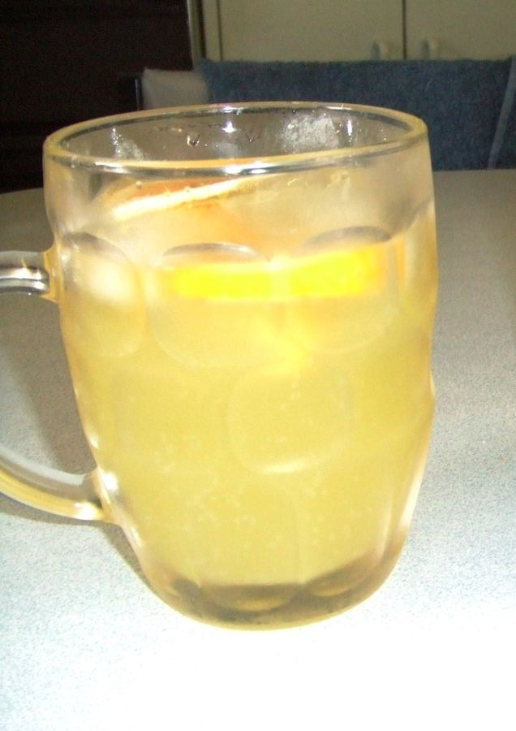

Nuran's Recipes · John's Cocktails
Tarpeena Twister
Pint glass (or other tall glass) chilled
Ice cubes
Fresh dry white, moselle or chardonnay 

Juice, preferably orange,
complimentary diet mixers such as Waterford's melon mango and Schweppe's lemonade.
Place ice cubes in glass, pour one part white wine. Add splash of juice then a combined total of three to four parts mixer.
Can be garnished with lemon slice.